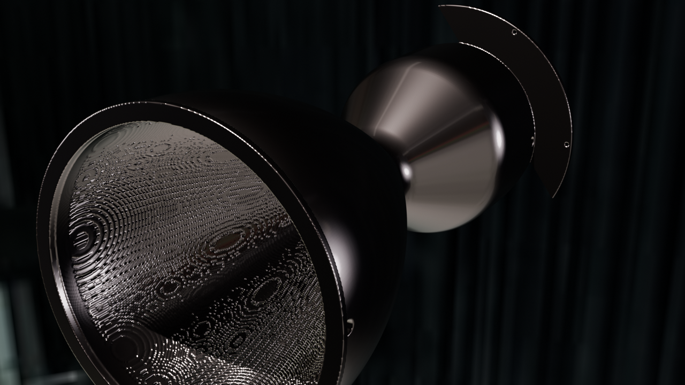

Featured · 5 kN

Small pressure-fed · LOX/CH4 · 5 kN
The reference engine. 5 kN sea-level thrust, 4 MPa chamber, methalox, pressure-fed, regen-cooled. Designed to fit a 250 × 250 × 280 mm LPBF build envelope. The project's 5,700+-test suite stays green with this configuration.
- Thrust
- 5.0 kN
- P_c
- 4.0 MPa
- O/F
- 3.4
- Build time
- ~14 min
examples/small-pressure-fed-5kn/All gates pass